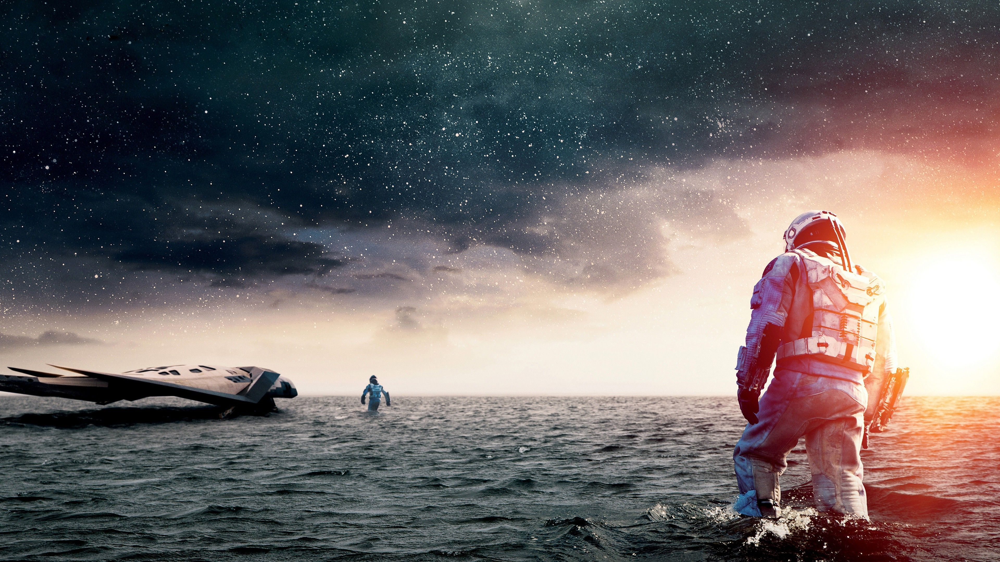
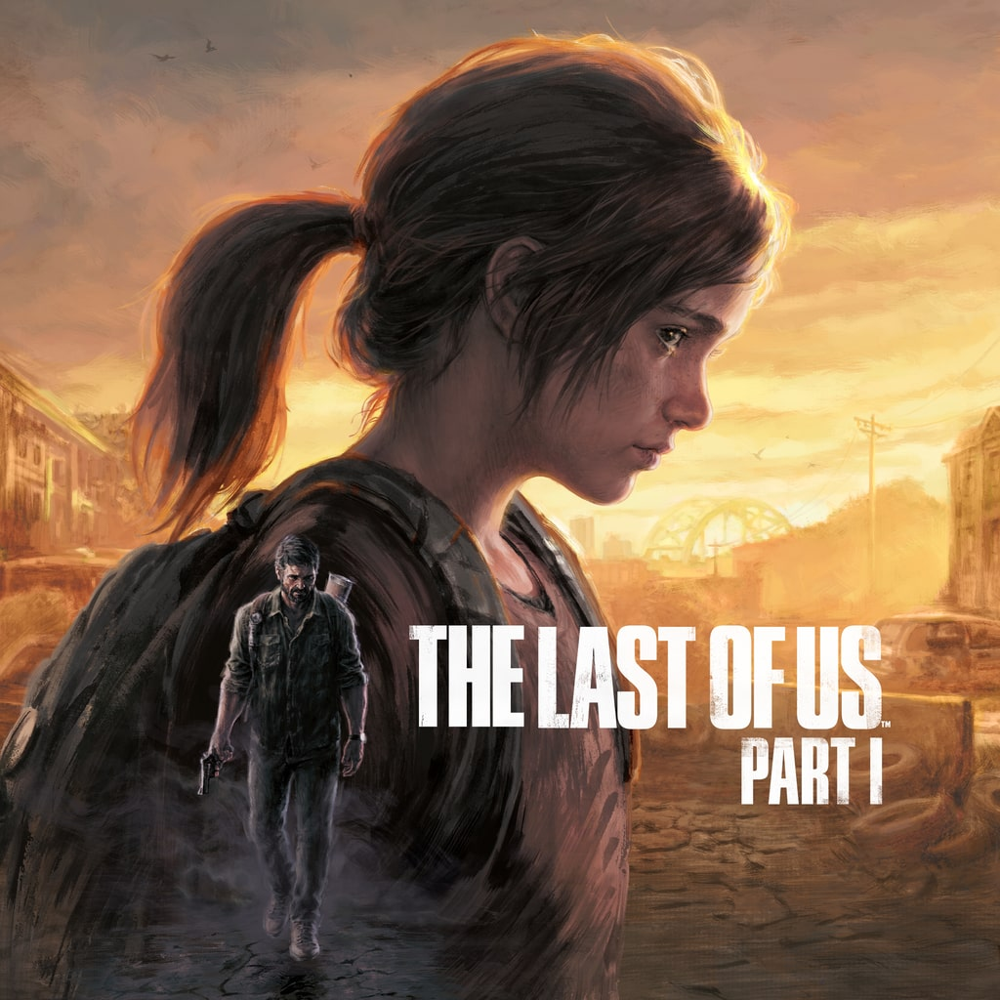
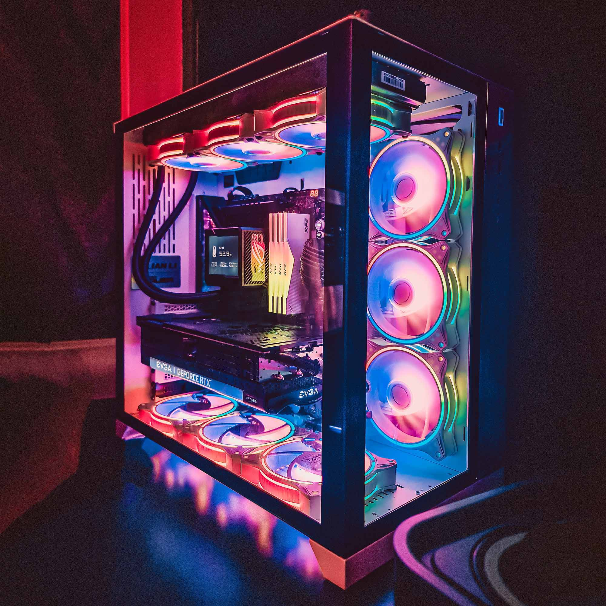
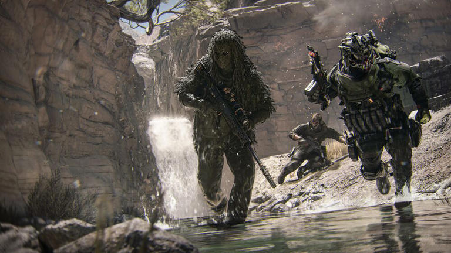

Filmes e Series

Os filmes e séries são meios de entretenimento tradicionais, que continuam populares até nos dias atuais
Gêneros como Ação e Aventura são alguns dos mais assistidos pelo mundo afora, além de obras de Terror e Comédia.
Musicas e Podcasts
A música e os podcasts hoje são importantes formas de entreterimento e de comunicação.
Existem diversos estilos de música e de podcasts por aí na internet, transformando o áudio em uma ferramenta poderosa de expressão cultural.
Games e Tecnologia



Os games e a tecnologia também têm uma boa relevância no mundo do entretenimento. Afinal, graças à internet o acesso aos conteúdos ficou facilitado.
Boa parte das franquias de jogos são mundialmente conhecidas. Então é bem provável que alguém de outro país conheça Counter-Strike, por exemplo.